Records, measured the same way.
Production, mixing, mastering and vocals. Decisions checked against the rendered audio rather than against a setting, because the tools that do the checking were built here too.
Scroll
01 / The work
What happens to your record.
Every move is checked by rendering the result and measuring it. A fader that moved and a sound that changed are two different facts, and only one of them is evidence.
Comping, tuning, timing and stacking. Most records live or die on the lead, and most mixes treat it as one more channel.
AfterTime is a production platform written for this studio first. The measurement in it exists because these records needed it.
Quoted before the session, revised after it. No hourly meter running while you decide.
02 / Listen
Some of it.
Snippets, not masters. The full catalogue, and the pinned track badluckwearingsundayclothes, are on SoundCloud.
03 / Rates
What it costs.
Per track, quoted before the session. Two revisions included on everything.
Mixing
from €100 per track
Your stems, balanced and finished. Decisions checked against the rendered audio rather than against a setting.
- Two revisions included
- Stems or a session, whichever you have
- Vocal tuning and timing where it needs it
Mastering
from €60 per track
Loudness, tone and translation, measured on a real render rather than assumed from a meter.
- Streaming and a louder alternative
- Two revisions included
Mix and master
from €140 per track
Both together. Cheaper than the two separately, and it sounds better than mixing for somebody else to finish.
- Everything in both rows above
- One pass, one ear, one set of decisions
Full production
from €450 per track
Send a reference and a verse. Get a finished record.
- Beat, arrangement and structure
- Vocal recording direction and comping
- Mix and master included
- Writing and topline if you want it
Sample flip
from €120 per flip
A sample chopped, replayed and built into something you can actually release.
- Cleared-sample guidance before anything is built
- Stems delivered
Vocals on your beat
quoted per track
Topline, writing and performance as Addy Jeans.
- Quoted after hearing the beat
Every figure is a starting point, not a quote. The work is scoped on a call first, and the price is agreed before anything begins. Prices are in euro and there is nothing to pay on this site: it has no checkout.
Send the track.
A rough mix, a voice note, a reference. Whatever you have is enough to quote from.
Studio
atijeans757@gmail.comListen
Addy Jeans on SoundCloud